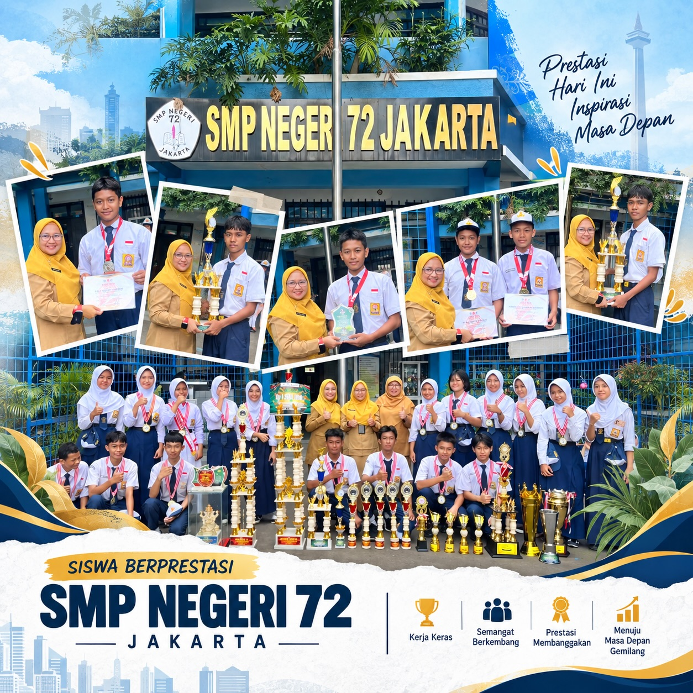
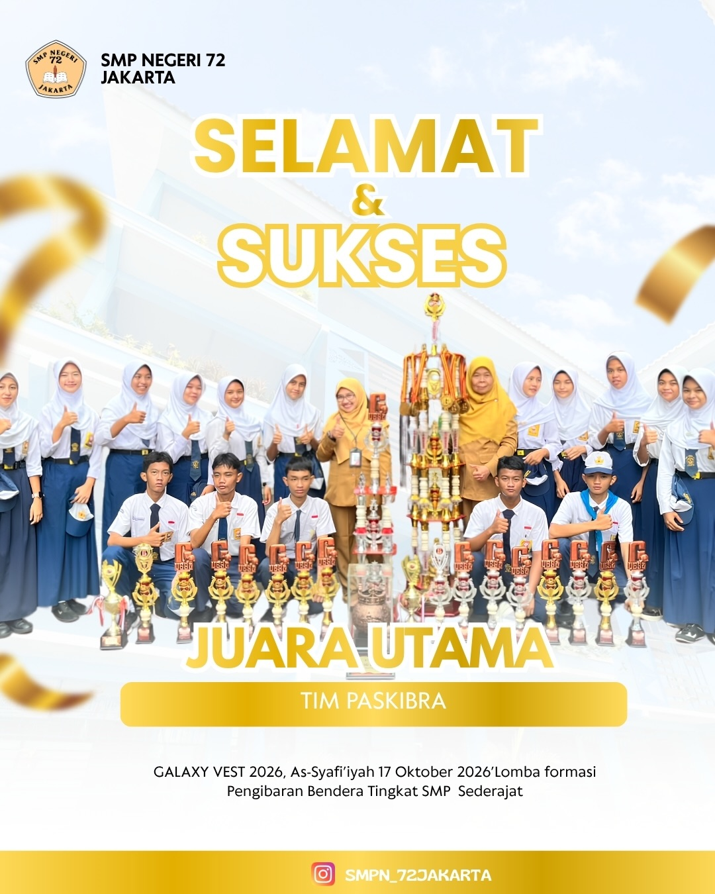
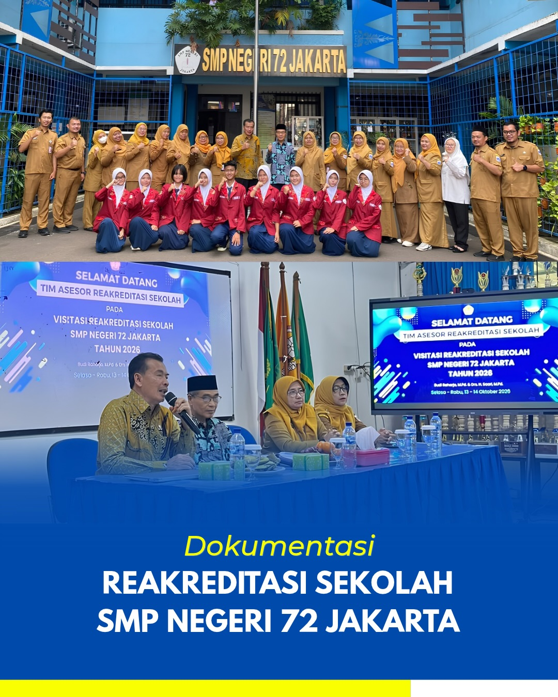

Informasi
Berita & Kegiatan Sekolah
Kabar terbaru seputar prestasi, kegiatan, dan pengumuman resmi SMPN 72 Jakarta.

Prestasi
Prestasi Gemilang Siswa-Siswi SMP Negeri 72 Jakarta
September 2026 menjadi bulan penuh prestasi bagi peserta didik SMP Negeri 72 Jakarta.
30 Oktober 2026

Prestasi
Prestasi Gemilang Siswa-Siswi SMP Negeri 72 Jakarta
Cabang olahraga renang dan pencak silat berhasil mengharumkan nama sekolah di tingkat DKI Jakarta.
30 Oktober 2026

Kegiatan Sekolah
Upacara Hari Kemerdekaan Republik Indonesia
Kegiatan memperingati Hari Kemerdekaan Republik Indonesia ke-81.
17 Agustus 2026

Pengumuman
Reakreditasi Sekolah SMP NEGERI 72 JAKARTA
Informasi reakreditasi sekolah SMP Negeri 72 Jakarta telah terlaksana dengan baik.
16 Oktober 2026

Pengumuman
Mekanisme Pendaftaran Murid Baru Tahun Ajaran 2026/2027
Tahapan, persyaratan, dan jadwal penerimaan murid baru SMPN 72 Jakarta.
20 Oktober 2026

Kegiatan Sekolah
Verifikasi Lapangan Adiwiyata Tingkat Kota
Penilaian program sekolah peduli dan berbudaya lingkungan hidup.
12 Oktober 2026

Kegiatan Sekolah
Workshop Peningkatan Kompetensi Guru Berbasis Digital
Penguatan pemanfaatan teknologi dalam pembelajaran di kelas.
05 Oktober 2026
Punya pertanyaan tentang pendaftaran?
Tim kami siap membantu Anda. Hubungi kami atau kunjungi langsung sekolah.